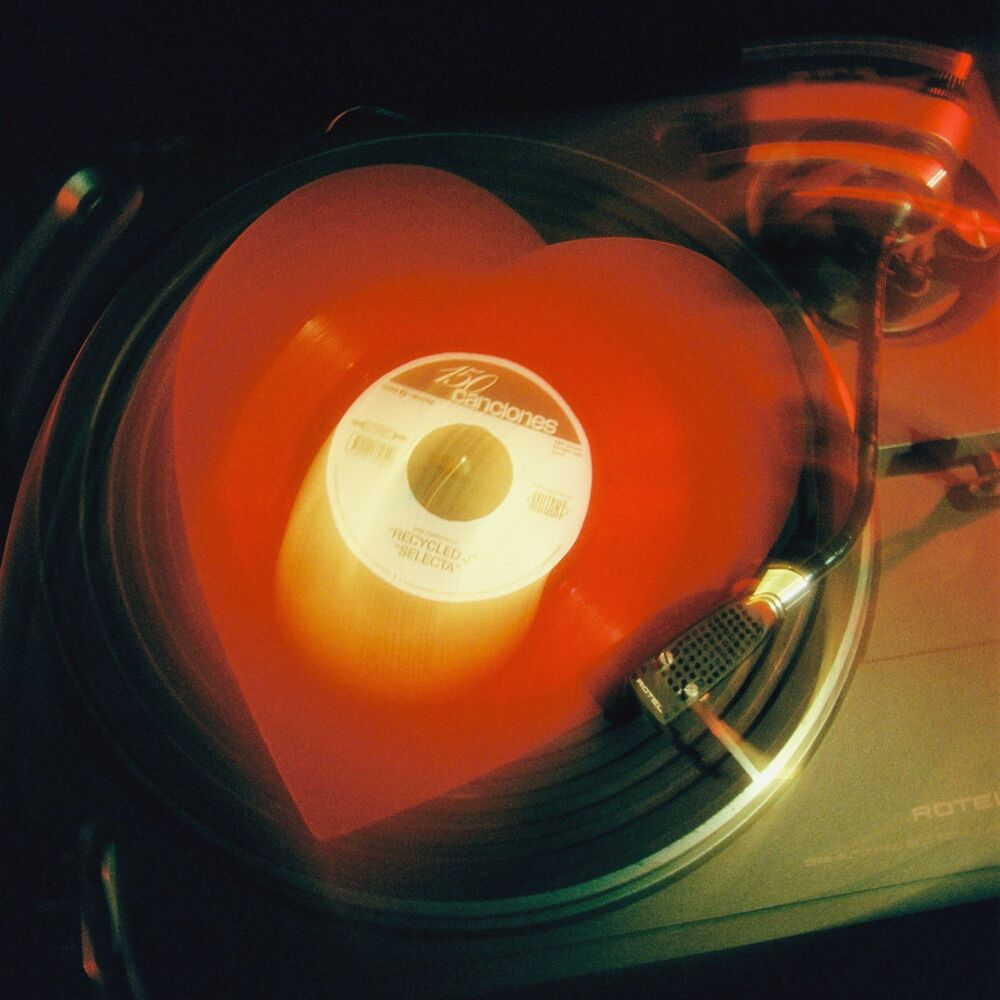

HENS SIGUE SACANDO HITS: TODO CAMBIÓ ES EL ÚLTIMO SINGLE ANTES DE SU PRÓXIMO ÁLBUM
Hens publica Todo cambió, el último single antes de su segundo álbum de estudio: No me odio tanto, que verá la luz el 14 de abril. Este nuevo proyecto es la evolución de lo anterior y muestra todo el camino recorrido desde su debut con Hensito. Un disco que gracias a canciones como Dos dias al mes o Renfe se convirtió en himnos de una generación
RECYCLED J ENAMORA A TODOS CON 150 CANCIONES

Su nuevo corte es una oda al amor romántico que viene dominado por un riff de guitarra hipnotizante y una demostración de recursos y matices inéditos que anticipan el carácter fresco de esta nueva etapa que Recycled J inicia en 2023. Y es que, en los últimos años, el madrileño se ha convertido en una de las figuras claves del urban/pop nacional, dejándonos pruebas de su versatilidad y haciendo evidente su gusto especial por las fusiones musicales entre el pop y el urbano, algo que venía anticipando en sus anteriores trabajos y que consolida en este nuevo proyecto.